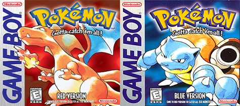
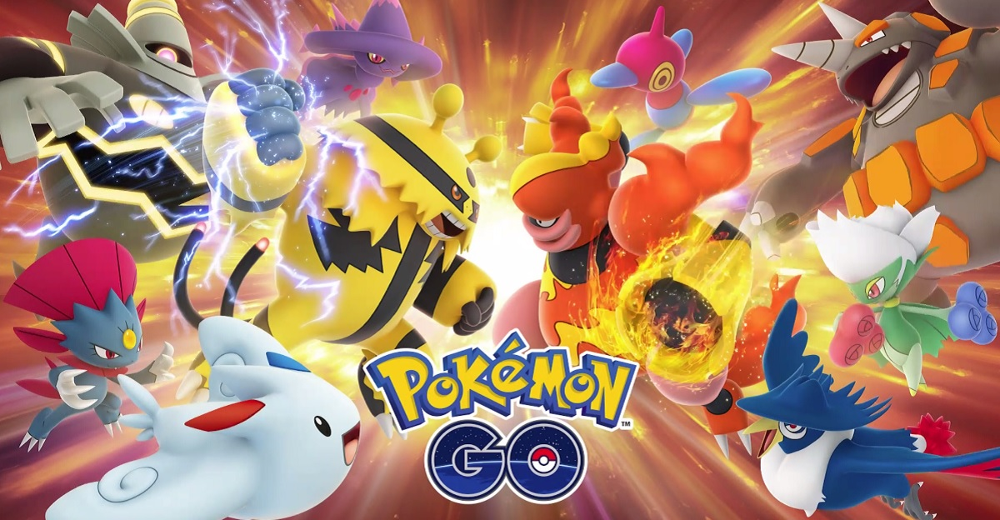

<!DOCTYPE html>
<html>
<head>
    <meta charset="UTF-8">
    <meta name="viewport" content="width=device-width, initial-scale=1.0">
    <link rel="stylesheet" href="https://use.typekit.net/wae4zuk.css">


  <title> Pokemon microsite</title>

  <link rel="stylesheet" href="css/styles.css"
</head>
    
</html>

<body>
        <nav>
            <a href="index.html">
            </a>
            <div class="nav-links"
            <ul>
                <li><a href="games.html">GAMES</a></li>
                <li><a href="anime.html">ANIME</a></li>
                <li><a href="cards.html">CARDS</a></li>
            </ul>
           </div>
        </nav>
<div class="container">
    <br>
    <br>

    <h1>GAMES </h1>
    <br>
    <br>

    
    <br>
    <br>
    <br>
    <h3>Generations</h3>
    <p class="home-p">
        All of the licensed Pokémon properties overseen by the Pokémon Company International are divided roughly by generation. These generations are roughly chronological divisions by release; every several years, when a sequel to the 1996 role-playing video games Pokémon Red and Green is released that features new Pokémon, characters, and gameplay concepts, that sequel is considered the start of a new generation of the franchise. The main Pokémon video games and their spin-offs, the anime, manga, and trading card game are all updated with the new Pokémon properties each time a new generation begins. Some Pokémon from the newer games appear in anime episodes or films months, or even years, before the game they were programmed for came out. The first generation began in Japan with Pokémon Red and Green on the Game Boy. As of 2021, there are eight generations of main series video games. The most recent games in the main series, Pokémon Sword and Shield, began the eighth and latest generation and were released worldwide for the Nintendo Switch on November 15, 2019. The upcoming core series games, Pokémon Brilliant Diamond and Shining Pearl will be released in late 2021, and Pokémon Legends: Arceus in early 2022, both for the Nintendo Switch. They are remakes and a premake[21] of the 2006 Nintendo DS games Pokémon Diamond and Pearl, respectively.     
    </p>
    
            <br>

            <br>
            <br>

  
    <p>
        In Pokémon Go, and in Pokémon: Let's Go, Pikachu! and Let's Go, Eevee!, wild Pokémon encountered by players can be caught in Poké Balls, but generally cannot be battled. Pokémon already owned by other Trainers cannot be captured, except under special circumstances in certain side games. If a Pokémon fully defeats an opponent in battle so that the opponent is knocked out ("faints"), the winning Pokémon gains experience points and may level up. 
    </p>

</div>

</body>

<footer>
    <div id=foot-container>
    <ul class="bottom">
        <li> <a href="https://en.wikipedia.org/wiki/Pok%C3%A9mon"> Content from: Pokémon Wikipedia</a></li>
    </ul>
    <div class="credits">
      <ul>
        <li><a>Interactions Foundations Fall 2021</a></li>
        <li><a>Creative Director: Tim Xu </a></li>
        <li><a>Designer, Developer: Layla Lee</a></li>
      </ul>
    </div>
  </div>
  </footer>